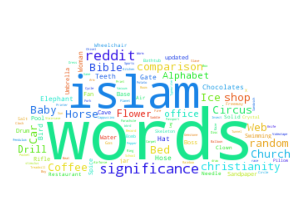
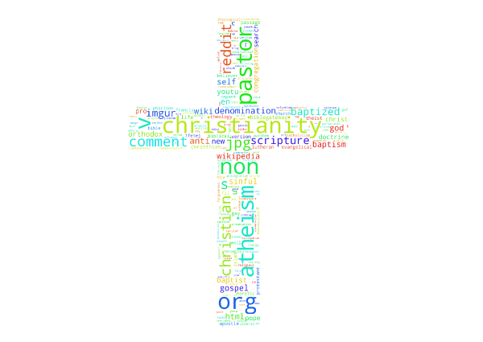
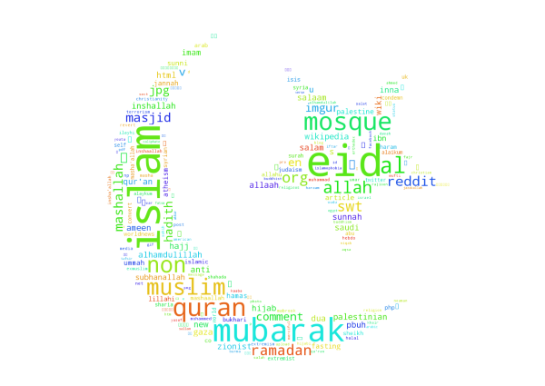
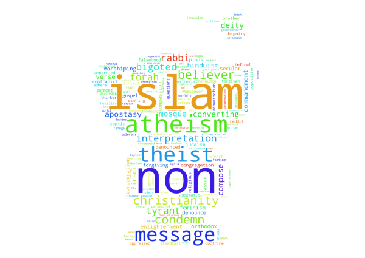
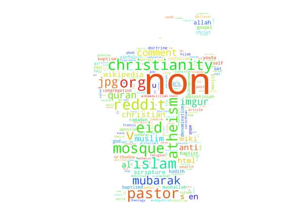

-
Theory
Another way to compare these two communities is by looking at the actual text of the posts in the subreddits. From the text, we can use natural language proscessing to find words that are significant to each group.
One way to measure the significance is by calculating the TF-IDF of each word. The TF-IDF gives a significance to words that appear many times in a context, but also takes away significance from words that appear in many contexts. This makes sense as words that are not unique to one text are often less significant.
At this point you may realize that this scheme poses a slight problem to our goal. Again, our goal is to find the significant words that the two subreddits have in common; however, we just discussed that TF-IDF determines words to be less significant if they are in common.
Because of this, we use a slight work-around. Instead of grouping the Christianity and Islam subreddits together and calculating the TF-IDFs of the words, we calculate the TF-IDFs of each subreddit while they are grouped with other randoms subreddits, and compare the significant words at that point.
Implementation
We start off by retreiving text from the Christianity and Islam subreddit groups. We do this by simply stringing together the top 1000 posts (title and content) along with their comments and storing them in text files. We tokenize and clean the text, removing stopwords and numbers. Since we are pooling the communities seperately with other subreddits, namely Sports, Gaming, Music and Movies, we do this same process for them also.
Next we calculate the TF-IDF score. We group Islam with Sports, Gaming, Music and Movies and find the TF-IDF scores for every word. We do the exact same with the Christianity text. At this point we have a score for every word in the Islam and Chrstianity subreddt texts indicationg how significant that is in the group. Now we will proceed to analyze these results using wordclouds.
-
Christianity
This first wordcloud displays the words that are most significant in the Christianity subreddit. Feel free to click on the image and explore some of the words. In general, the larger the word means the more significant.
Most of these words are related to Christianity. There are a few interesting ones, such as atheism, wikipedia, and youtube. Others to point out are people, life, science, and self.
-
Islam
This next wordcloud displays the words that are most significant in the Islam subreddit. Again you can click on the image to zoom in on some of the words.
Most of these words again are very related to Islam. Some to notice are worldnews, war, media, and facebook.
-
In Common
Now we start to compare the two communities. To create this wordcloud, we made lists of the top 1000 most significant words from both subreddits, and took words that appeared in both lists.
There are some words that are cool to see these two communities have in common. For instance, compassion, forgiveness, repentence, feminism, message and worshiping.
-
Closest Significance
This is an interesting wordcloud where the words are ones that the two subreddits had similar in significance. In other words, we took all of the words that the subreddits had in common and calculated the absolute difference between their TF-IDF scores. In general, the larger the word means the smaller the difference and the closer in similarity of significant.
We can see that the words christianity, islam, and atheism stand out here. This is interesting beacuse it appears that both groups talk about these three religions the same amount.
-
Combined
For the final wordcloud we don't use the TF-IDF scores that we have been using. Instead, the TF-IDF scores for these words were calculated by first combining the Islam and Christianity texts, and grouping it with the other subreddits. Therefore these words are ones that stand out the most out of the two communities altogether.
Naturally we see that the words "islam" and "christianity" surface along with other unsurprizing words such as muslim, mosque, pastor, reddit, comment, and scripture.
- 
- 
- 
- 

- 
Click to Zoom